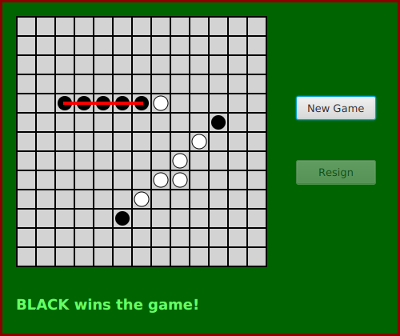

Solution for Programming Exercise 7.7
This page contains a sample solution to one of the exercises from Introduction to Programming Using Java.
Exercise 7.7:
The game of Go Moku (also known as Pente or Five Stones) is similar to Tic-Tac-Toe, except that it is played on a much larger board and the object is to get five squares in a row rather than three. The board should have 13 rows and 13 columns of squares. Players take turns placing pieces on a board. A piece can be placed in any empty square. The first player to get five pieces in a row—horizontally, vertically, or diagonally—wins. If all squares are filled before either player wins, then the game is a draw. Write a program that lets two players play Go Moku against each other.
Your program will be simpler than the Checkers program from Subsection 7.5.3. Play alternates strictly between the two players, and there is no need to highlight the legal moves. You will only need one nested subclass, a subclass of Canvas to draw the board and do all the work of the game, like the nested CheckersBoard in the Chekers program. You will probably want to look at the source code for the checkers program, Checkers.java, for ideas about the general outline of the program.
The hardest part of the program is checking whether the move that a player makes is a winning move. To do this, you have to look in each of the four possible directions from the square where the user has placed a piece. You have to count how many pieces that player has in a row in that direction. If the number is five or more in any direction, then that player wins. As a hint, here is part of the code from my program. This code counts the number of pieces that the user has in a row in a specified direction. The direction is specified by two integers, dirX and dirY. The values of these variables are 0, 1, or -1, and at least one of them is non-zero. For example, to look in the horizontal direction, dirX is 1 and dirY is 0.
int ct = 1; // Number of pieces in a row belonging to the player.
int r, c; // A row and column to be examined
r = row + dirX; // Look at square in specified direction.
c = col + dirY;
while ( r >= 0 && r < 13 && c >= 0 && c < 13
&& board[r][c] == player ) {
// Square is on the board, and it
// contains one of the player's pieces.
ct++;
r += dirX; // Go on to next square in this direction.
c += dirY;
}
r = row - dirX; // Now, look in the opposite direction.
c = col - dirY;
while ( r >= 0 && r < 13 && c >= 0 && c < 13
&& board[r][c] == player ) {
ct++;
r -= dirX; // Go on to next square in this direction.
c -= dirY;
}
Here is a picture of my program, just after black has won the game.

This is a fairly complicated program, but it's possible to design and build it in stages, testing each stage separately. The first stage, the general layout of the panel, is already done in the Checkers.java program. With just a few changes, the main panel class, the layout of the panel, and the button and message handling come directly from that program. Let's take the rest of the Go Moku game one stage at a time.
A two-dimensional array is used to store the contents of the board. This array is of type int[][] and is named board. It is defined as an instance variable in the Board class, and it is initialized in the constructor of that class to be a 13-by-13 array. The value in each position of the array is one of three constants: EMPTY, WHITE, or BLACK. When a game begins, each of the entries in the array is set to empty. When a player clicks on an empty square, the corresponding entry in the array is changed from EMPTY to BLACK or WHITE, depending on which player placed the piece. In the drawBoard() method, the contents of the board array are used to decide what pieces to draw on the board.
Drawing the Board
We need a drawBoard() method for the Board class that can draw the board. The board has 13 rows and 13 columns of spaces. How wide should the board be? If each square in the board is x pixels wide, we need a total of 13*x pixels just for the spaces. But there are also lines between the spaces and at the edges of the board. I make each line two pixels wide, so the 14 lines require another 28 pixels. So, with squares of side x, we need a board that is 13*x+28 pixels wide. Since I wanted something about the same size as the original checkerboard, which was 324 pixels, I choose x to be 22, giving a board width of 314 pixels. The height is also 314.
The left edge of the col-th column of squares in the board is 2+24*col. This allows for the two-pixel border on the left and for 24 pixels for each of the preceding columns of squares. (That's 22 pixels for the square plus two pixels for the line between that column and the next.) The lines at x values 1 + 24*i, for i from 0 to 13. This puts the center of the pen that is used to draw the line in the correct position, one pixel to the left of each column for the first 13 lines, and one pixel from the right edge of the canvas for the final line. Rows work the same way. To draw a piece in row number row and column number col, the command
g.fillOval(4 + 24*col, 4 + 24*row, 18, 18);
can be used. This allows a two-pixel gap between the oval that represents that piece and the side of the square. Since the size of the square is 22 and there is a 2-pixel gap on each side of the oval, the size of the oval is 22 minus 4, or 18. In my program, I defined a method to draw a piece. Originally, I wrote it as:
private void drawPiece(GraphicsContext g, int piece, int row, int col) {
if (piece == WHITE)
g.setFill(Color.WHITE);
else
g.setFill(Color.BLACK);
g.fillOval(4 + 24*col, 34+24*row, 18, 18);
}
However, after looking at the result, I decided to outline the white pieces with black. That little addition improved the appearance of the game significantly.
The drawBoard() method fills the canvas with light gray, draws the black lines between the squares, and draws all the pieces that have been placed on the board. Remember that the piece in a given row and column is recorded in the board array as board[row][col]. This is done as follows:
public void drawBoard() {
GraphicsContext g = getGraphicsContext2D();
g.setFill( Color.LIGHTGRAY ); // fill canvas with light gray
g.fillRect(0,0,314,314);
/* Draw lines separating the square and along the edges of the canvas. */
g.setStroke(Color.BLACK);
g.setLineWidth(2);
for (int i = 0; i <= 13; i++) {
g.strokeLine(1 + 24*i, 0, 1 + 24*i, 314);
g.strokeLine(0, 1 + 24*i, 314, 1 + 24*i);
}
/* Draw the pieces that are on the board. */
for (int row = 0; row < 13; row++)
for (int col = 0; col < 13; col++)
if (boardData[row][col] != EMPTY)
drawPiece(g, boardData[row][col], row, col);
} // end drawBoard()
Playing the Game
The logic of the GoMoku game itself is mostly in the method "void doClickSquare(int row, int col)", which is called by the mousePressed() method when the user clicks on the square in row number row and column number col. This method must check whether the move is legal. If so, the move is made. The method then checks whether the move wins the game. If so, the game ends. The game will also end if the board has become completely full. Otherwise, play passes to the other player.
The current player is recorded in an instance variable named currentPlayer. The value of this variable is one of the two constants WHITE or BLACK. The game can be ended by calling a method named gameOver(). I wrote a boolean-valued method called winner() to check whether a move wins the game. (When I first wrote this method, it did nothing but "return false". This let me try out the program at this stage of development, before I started working on the difficult problem of testing for a winner.) The doClickSquare() method can be written:
void doClickSquare(int row, int col) {
/* Check that the user clicked an empty square. If not, show an
error message and exit. */
if ( boardData[row][col] != EMPTY ) {
if (currentPlayer == BLACK)
message.setText("BLACK: Please click an empty square.");
else
message.setText("WHITE: Please click an empty square.");
return;
}
/* Make the move. Check if the board is full or if the move
is a winning move. If so, the game ends. If not, then it's
the other user's turn. If there is a winner, call
drawWinLine() to mark the winning pieces. */
boardData[row][col] = currentPlayer; // Make the move.
drawBoard();
if (winner(row,col)) { // First, check for a winner.
if (currentPlayer == WHITE)
gameOver("WHITE wins the game!");
else
gameOver("BLACK wins the game!");
drawWinLine();
return;
}
boolean emptySpace = false; // Check if the board is full.
for (int i = 0; i < 13; i++)
for (int j = 0; j < 13; j++)
if (boardData[i][j] == EMPTY)
emptySpace = true;
if (emptySpace == false) {
gameOver("The game ends in a draw.");
return;
}
/* Continue the game. It's the other player's turn. */
if (currentPlayer == BLACK) {
currentPlayer = WHITE;
message.setText("WHITE: Make your move.");
}
else {
currentPlayer = BLACK;
message.setText("BLACK: Make your move.");
}
} // end doClickSquare()
Note that when the move wins the game, the method drawWinLine() is called. This will draw a red line through the winning pieces. Unlike every other part of the board, the red line is not drawn by drawBoard(). It is added when the game is over, and it will stay there until the board is erased at the beginning of the new game. Note that this violates my general policy that a draw() method should completely reflect the state of the game. In this case, it does not draw the red line when the state of the game is that the game has been won. This is OK only because drawBoard() is never called when the game is in that state.
Determining the Winner
The winner() method is certainly the hardest part of the program. The method must look in each of the four possible directions from the square where the user has placed a piece. If the player has five or more pieces in a row in that direction, then the player has won. As indicated in the exercise, a direction can be indicated by two variables, dirX and dirY. The values of these variables for each of the four directions are:
dirX dirY Why?
---- ---- --------------------------------
horizontal direction 1 0 Only x changes.
vertical direction 0 1 Only y changes.
falling diagonal 1 1 Both x and y change.
rising diagonal 1 -1 Change in opposing directions.
I wrote a method "int count(int player, int row, int col, int dirX, int dirY) that counts the number of pieces the specified player has in a row, starting from the square in row number row and column number col and looking in the direction indicated by dirX and dirY. This method contains the code given in the exercise. It returns the number of pieces found. My winner method just calls this method for each of the four directions:
/**
* This is called just after a piece has been played on the
* square in the specified row and column. It determines
* whether that was a winning move by counting the number
* of squares in a line in each of the four possible
* directions from (row,col). If there are 5 squares (or more)
* in a row in any direction, then the game is won.
*/
private boolean winner(int row, int col) {
if (count( board[row][col], row, col, 1, 0 ) >= 5)
return true;
if (count( board[row][col], row, col, 0, 1 ) >= 5)
return true;
if (count( board[row][col], row, col, 1, -1 ) >= 5)
return true;
if (count( board[row][col], row, col, 1, 1 ) >= 5)
return true;
/* When we get to this point, we know that the game is not won. */
return false;
} // end winner()
When I first wrote this method, I checked whether the number of pieces was "== 5" instead of ">= 5". This was a bug. It's possible for a player to get more than 5 pieces in a row, if the player plays a piece in an empty square that joins two shorter rows of pieces together.
Marking the Winning Pieces
In my program, when a player wins, the row of pieces that wins the game is marked with a red line. To do this, I added four instance variables of type int to the Board class. The instance variables are named win_r1, win_c1, win_r2, and win_c2. After a player has won the game, the values of these variables have been set to mark the squares at the two ends of the winning row of pieces. The positions of these squares are given by (win_r1,win_c1) and (win_r2,win_c2).
I added some code to the count() method to set the values of these variables. As the count() method counts the pieces in a line, it sets win_r1, win_c1, win_r2, and win_c2 to mark the location of the last piece it finds in the two directions it checks. The values are always set when count() is called. If the game is won, this will set the values correctly. My program depends on the fact that once it has been determined that a game has been won, count() will not be called again during that game. This means that when drawWinLine() is called, the variables win_r1, win_c1, win_r2, and win_c2 will still mark the ends of the line of pieces that won the game. (I'm not really happy about how tricky this is. My solution is "fragile" in the sense that it could easily be broken inadvertently if the logic of the program is changed just a little. But I really wanted to mark the winning pieces...)
import javafx.application.Application;
import javafx.scene.Scene;
import javafx.stage.Stage;
import javafx.scene.layout.Pane;
import javafx.scene.canvas.Canvas;
import javafx.scene.canvas.GraphicsContext;
import javafx.scene.control.Button;
import javafx.scene.control.Label;
import javafx.scene.paint.Color;
import javafx.scene.text.Font;
import javafx.scene.text.FontWeight;
import javafx.scene.input.MouseEvent;
/**
* This panel lets two users play Go Moku against each other.
* Black always starts the game.
*/
public class GoMoku extends Application {
public static void main(String[] args) {
launch(args);
}
//---------------------------------------------------------------------
private static final int // Constants to represent possible contents
EMPTY = 0, // of squares on the board. The constants
BLACK = 1, // BLACK and WHITE are also used to
WHITE = 2; // represent the current player.
private GoMokuBoard board; // A canvas on which a checker board is drawn,
// defined by a static nested subclass. Much of
// the game logic is defined in this class.
private Button newGameButton; // Button for starting a new game.
private Button resignButton; // Button that a player can use to end
// the game by resigning.
private Label message; // Label for displaying messages to the user.
/**
* The constructor creates the Board (which in turn creates and manages
* the buttons and message label), adds all the components, and sets
* the bounds of the components. A null layout is used. (This is
* the only thing that is done in the main Checkers class.)
*/
public void start(Stage stage) {
/* Create the label that will show messages. */
message = new Label("Click \"New Game\" to begin.");
message.setTextFill( Color.rgb(100,255,100) ); // Light green.
message.setFont( Font.font(null, FontWeight.BOLD, 18) );
/* Create the buttons and the board. The buttons MUST be
* created first, since they are used in the CheckerBoard
* constructor! */
newGameButton = new Button("New Game");
resignButton = new Button("Resign");
board = new GoMokuBoard(); // a subclass of Canvas, defined below
board.drawBoard(); // draws the empty board
/* Set up ActionEvent handlers for the buttons and a MousePressed handler
* for the board. The handlers call instance methods in the board object. */
newGameButton.setOnAction( e -> board.doNewGame() );
resignButton.setOnAction( e -> board.doResign() );
board.setOnMousePressed( e -> board.mousePressed(e) );
/* Set the location of each child by calling its relocate() method */
board.relocate(20,20);
newGameButton.relocate(370, 120);
resignButton.relocate(370, 200);
message.relocate(20, 370);
/* Set the sizes of the buttons. For this to have an effect, make
* the butons "unmanaged." If they are managed, the Pane will set
* their sizes. */
resignButton.setManaged(false);
resignButton.resize(100,30);
newGameButton.setManaged(false);
newGameButton.resize(100,30);
/* Create the Pane and give it a preferred size. If the
* preferred size were not set, the unmanaged buttons would
* not be included in the Pane's computed preferred size. */
Pane root = new Pane();
root.setPrefWidth(500);
root.setPrefHeight(420);
/* Add the child nodes to the Pane and set up the rest of the GUI */
root.getChildren().addAll(board, newGameButton, resignButton, message);
root.setStyle("-fx-background-color: darkgreen; "
+ "-fx-border-color: darkred; -fx-border-width:3");
Scene scene = new Scene(root);
stage.setScene(scene);
stage.setResizable(false);
stage.setTitle("Go Moku!");
stage.show();
} // end start()
/**
* This canvas displays a GoMoku board: a 314-by-314 board divided into 13
* rows and 13 columns of squares. This class contains methods that are
* called in response to a mouse click on the canvas and in response to
* clicks on the New Game and Resign buttons. Note that the "New Game"
* and "Resign" buttons must be created before the Board constructor is
* called, since the constructor references the buttons (in the call
* to doNewGame()).
*/
private class GoMokuBoard extends Canvas {
int[][] boardData;
boolean gameInProgress; // Is a game currently in progress?
/* The next three variables are valid only when the game is in progress. */
int currentPlayer; // Whose turn is it now? The possible values
// are BLACK and WHITE
int win_r1, win_c1, win_r2, win_c2; // When a player wins by getting five or more
// pieces in a row, the squares at the
// ends of the row are (win_r1,win_c1)
// and (win_r2,win_c2). A red line is
// drawn between these squares. The values are
// set in the count() method. The are only used
// in drawWinLine(), which is only called after
// the game has been won.
/**
* Constructor. Creates a CheckersData to represent the
* contents of the checkerboard, and calls doNewGame to
* start the first game.
*/
GoMokuBoard() {
super(314,314); // canvas is 314-by-314 pixels
doNewGame();
}
/**
* Start a new game. This method is called when the Board is first
* created and when the "New Game" button is clicked. Event handling
* is set up in the start() method in the main class.
*/
void doNewGame() {
if (gameInProgress == true) {
// This should not be possible, but it doesn't hurt to check.
message.setText("Finish the current game first!");
return;
}
boardData = new int[13][13]; // Start the game with an empty board.
// This relies on the fact that EMPTY = 0.
currentPlayer = BLACK; // BLACK moves first.
message.setText("Black: Make your move.");
gameInProgress = true;
newGameButton.setDisable(true);
resignButton.setDisable(false);
drawBoard();
}
/**
* Current player resigns. Game ends. Opponent wins. This method is
* called when the user clicks the "Resign" button. Event handling is
* set up in the start() method in the main class.
*/
void doResign() {
if (gameInProgress == false) { // Should be impossible.
message.setText("There is no game in progress!");
return;
}
if (currentPlayer == WHITE)
gameOver("WHITE resigns. BLACK wins.");
else
gameOver("BLACK resigns. WHITE wins.");
}
/**
* The game ends. The parameter, str, is displayed as a message
* to the user. The states of the buttons are adjusted so players
* can start a new game. This method is called when the game
* ends at any point in this class.
*/
void gameOver(String str) {
message.setText(str);
newGameButton.setDisable(false);
resignButton.setDisable(true);
gameInProgress = false;
}
/**
* This is called by mousePressed() when a player clicks on the
* square in the specified row and col. It has already been checked
* that a game is, in fact, in progress.
*/
void doClickSquare(int row, int col) {
/* Check that the user clicked an empty square. If not, show an
error message and exit. */
if ( boardData[row][col] != EMPTY ) {
if (currentPlayer == BLACK)
message.setText("BLACK: Please click an empty square.");
else
message.setText("WHITE: Please click an empty square.");
return;
}
/* Make the move. Check if the board is full or if the move
is a winning move. If so, the game ends. If not, then it's
the other user's turn. If there is a winner, call
drawWinLine() to mark the winning pieces. */
boardData[row][col] = currentPlayer; // Make the move.
drawBoard();
if (winner(row,col)) { // First, check for a winner.
if (currentPlayer == WHITE)
gameOver("WHITE wins the game!");
else
gameOver("BLACK wins the game!");
drawWinLine();
return;
}
boolean emptySpace = false; // Check if the board is full.
for (int i = 0; i < 13; i++)
for (int j = 0; j < 13; j++)
if (boardData[i][j] == EMPTY)
emptySpace = true;
if (emptySpace == false) {
gameOver("The game ends in a draw.");
return;
}
/* Continue the game. It's the other player's turn. */
if (currentPlayer == BLACK) {
currentPlayer = WHITE;
message.setText("WHITE: Make your move.");
}
else {
currentPlayer = BLACK;
message.setText("BLACK: Make your move.");
}
} // end doClickSquare()
/**
* This is called just after a piece has been played on the
* square in the specified row and column. It determines
* whether that was a winning move by counting the number
* of squares in a line in each of the four possible
* directions from (row,col). If there are 5 squares (or more)
* in a row in any direction, then the game is won. The values
* of the variables win_r1, win_c1, win_r2, win_c2 are set in
* any case, but they are only valid -- and will only be used --
* if the game has actually been won.
*/
private boolean winner(int row, int col) {
if (count( boardData[row][col], row, col, 1, 0 ) >= 5)
return true;
if (count( boardData[row][col], row, col, 0, 1 ) >= 5)
return true;
if (count( boardData[row][col], row, col, 1, -1 ) >= 5)
return true;
if (count( boardData[row][col], row, col, 1, 1 ) >= 5)
return true;
/* When we get to this point, we know that the game is not won.*/
return false;
} // end winner()
/**
* Counts the number of the specified player's pieces starting at
* square (row,col) and extending along the direction specified by
* (dirX,dirY). It is assumed that the player has a piece at
* (row,col). This method looks at the squares (row + dirX, col + dirY),
* (row + 2*dirX, col + 2*dirY), ... until it hits a square that is
* off the board or is not occupied by one of the player's pieces.
* It counts the squares that are occupied by the player's pieces.
* Furthermore, it sets (win_r1,win_c1) to mark last position where
* it saw one of the player's pieces. Then, it looks in the
* opposite direction, at squares (row - dirX, col-dirY),
* (row - 2*dirX, col - 2*dirY), ... and does the same thing.
* Except, this time it sets (win_r2,win_c2) to mark the last piece.
* Note: The values of dirX and dirY must be 0, 1, or -1. At least
* one of them must be non-zero.
*/
private int count(int player, int row, int col, int dirX, int dirY) {
int ct = 1; // Number of pieces in a row belonging to the player.
int r, c; // A row and column to be examined
r = row + dirX; // Look at square in specified direction.
c = col + dirY;
while ( r >= 0 && r < 13 && c >= 0 && c < 13 && boardData[r][c] == player ) {
// Square is on the board and contains one of the players's pieces.
ct++;
r += dirX; // Go on to next square in this direction.
c += dirY;
}
win_r1 = r - dirX; // The next-to-last square looked at.
win_c1 = c - dirY; // (The LAST one looked at was off the board or
// did not contain one of the player's pieces.
r = row - dirX; // Look in the opposite direction.
c = col - dirY;
while ( r >= 0 && r < 13 && c >= 0 && c < 13 && boardData[r][c] == player ) {
// Square is on the board and contains one of the players's pieces.
ct++;
r -= dirX; // Go on to next square in this direction.
c -= dirY;
}
win_r2 = r + dirX;
win_c2 = c + dirY;
// At this point, (win_r1,win_c1) and (win_r2,win_c2) mark the endpoints
// of the line of pieces belonging to the player.
return ct;
} // end count()
/**
* Draws the board and the pieces on the board. This method does NOT
* draw the red line through the winning pieces after the game has
* been won.
*/
public void drawBoard() {
GraphicsContext g = getGraphicsContext2D();
g.setFill( Color.LIGHTGRAY ); // fill canvas with light gray
g.fillRect(0,0,314,314);
/* Draw lines separating the square and along the edges of the canvas. */
g.setStroke(Color.BLACK);
g.setLineWidth(2);
for (int i = 0; i <= 13; i++) {
g.strokeLine(1 + 24*i, 0, 1 + 24*i, 314);
g.strokeLine(0, 1 + 24*i, 314, 1 + 24*i);
}
/* Draw the pieces that are on the board. */
for (int row = 0; row < 13; row++)
for (int col = 0; col < 13; col++)
if (boardData[row][col] != EMPTY)
drawPiece(g, boardData[row][col], row, col);
} // end paintComponent()
/**
* Draw a piece in the square at (row,col). The color is specified
* by the piece parameter, which should be either BLACK or WHITE.
*/
private void drawPiece(GraphicsContext g, int piece, int row, int col) {
if (piece == WHITE) {
g.setFill(Color.WHITE);
g.fillOval(4 + 24*col, 4 + 24*row, 18, 18);
g.setStroke(Color.BLACK);
g.setLineWidth(1);
g.strokeOval(4 + 24*col, 4 + 24*row, 18, 18);
}
else {
g.setFill(Color.BLACK);
g.fillOval(4 + 24*col, 4 + 24*row, 18, 18);
}
}
/**
* Draw a 4-pixel wide red line from the middle of the square at
* (win_r1,win_c1) to the middle of the square at (win_r2,win_c2).
* The values of the variables are set in the count() method.
* This routine is called to mark the pieces that won the game.
* It can only be called once in a given game, at the point where
* the game ends because a user places a winning piece.
*/
private void drawWinLine() {
GraphicsContext g = getGraphicsContext2D();
g.setStroke(Color.RED);
g.setLineWidth(4);
g.strokeLine( 13 + 24*win_c1, 13 + 24*win_r1, 13 + 24*win_c2, 13 + 24*win_r2 );
}
/**
* Respond to a user click on the board. If no game is
* in progress, show an error message. Otherwise, find
* the row and column that the user clicked and call
* doClickSquare() to handle it.
*/
public void mousePressed(MouseEvent evt) {
if (gameInProgress == false)
message.setText("Click \"New Game\" to start a new game.");
else {
int col = (int)((evt.getX() - 2) / 24);
int row = (int)((evt.getY() - 2) / 24);
if (col >= 0 && col < 13 && row >= 0 && row < 13)
doClickSquare(row,col);
}
}
} // end nested class Board
} // end class GoMoku